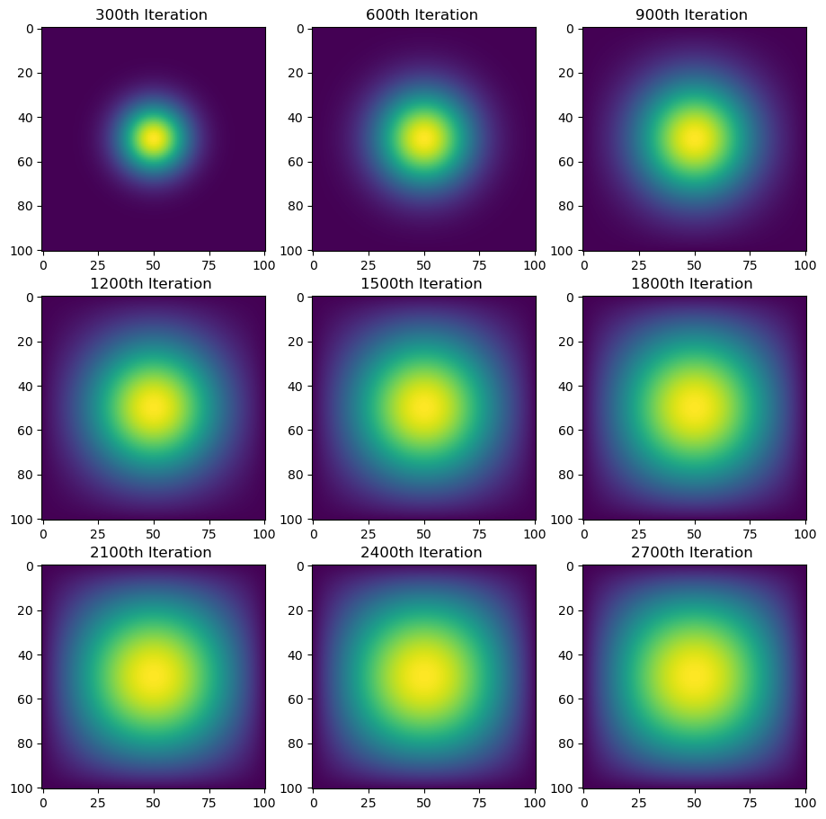

import numpy as np
import numpy as np
import matplotlib.pyplot as plt
import time
import jax
import jax.numpy as jnp
from jax.experimental import sparse
from scipy.sparse import diags
from jax.experimental.sparse import BCOOAdding necessary imports
Here we are adding imports for numpy, time, matplotlib, jax, and other specific ones for jax.
2D Heat Diffusion
For this blog, we are focusing on simulating two-dimensional heat diffusion as a sequence of matrix-vector multiplications.
Provided Functions
The first index is to import the provided functions that will aid us in this process. Here we will use get_A(N) which is used to create the corresponding matrix based on size N x N.
The second function to get is advance_time_matvecmul(A, u, epsilon), which moves the simulation up by one timestep using matrix-vector multiplication.
import inspect
from heat_equation import get_A
print(inspect.getsource(get_A)) def get_A(N):
"""creates the corresponding matrix A of size N^2 x N^2
Args:
N: size of array for matrix A of size N^2 x N^2
Returns:
matrix
"""
n = N * N
diagonals = [-4 * np.ones(n), np.ones(n-1), np.ones(n-1), np.ones(n-N), np.ones(n-N)]
diagonals[1][(N-1)::N] = 0
diagonals[2][(N-1)::N] = 0
A = np.diag(diagonals[0]) + np.diag(diagonals[1], 1) + np.diag(diagonals[2], -1) + np.diag(diagonals[3], N) + np.diag(diagonals[4], -N)
return A
import inspect
from heat_equation import advance_time_matvecmul
print(inspect.getsource(advance_time_matvecmul)) def advance_time_matvecmul(A, u, epsilon):
"""Advances the simulation by one timestep, via matrix-vector multiplication
Args:
A: The 2d finite difference matrix, N^2 x N^2.
u: N x N grid state at timestep k.
epsilon: stability constant.
Returns:
N x N Grid state at timestep k+1.
"""
N = u.shape[0]
u = u + epsilon * (A @ u.flatten()).reshape((N, N))
return u
from heat_equation import make_plot
print(inspect.getsource(make_plot)) def make_plot(visualizations, capture_after_n_iterations, iterations):
fig, axes = plt.subplots(3, 3, figsize=(11, 11)) #preparing 9 simulations of size 3 rows and 3 columns
for ax, visualization, index in zip(axes.flat, visualizations, range(capture_after_n_iterations, iterations + 1, capture_after_n_iterations)): #creating visualization for each item in the array
im = ax.imshow(visualization) #show visualization
ax.set_title(f"{index}th Iteration ") #title it with iteration number
plt.show()
Run Simulation
Next we can try runnning the simualtions. We set all the necessary variables that the functions will use for the simualtions. Then we put 1 unit of heat at hte midpoint. Then we create the matrix. Then we start the timer, call the functions and capture the simualtion visualization when its been after a certain number of iterations.
import inspect
import importlib
import heat_equation
importlib.reload(heat_equation)
from heat_equation import timer_advance_time
print(inspect.getsource(timer_advance_time)) def timer_advance_time(iterations, A, u, epsilon, capture_after_n_iterations):
timer_start_here = time.time() #get start time
visualizations = [] #array of visualizations that will be calculated at a certain iteration after timer ends
for i in range(iterations): #running number of simulations
u = advance_time_matvecmul(A, u, epsilon) #calling function to advance time step
if (i + 1) % capture_after_n_iterations == 0: #if the number of simulations is equal to capture_after_n_iterations, we want to visualize the diffusion of heat
visualizations.append(np.array(u)) #add to array to be visualized later
timer_end_here = time.time() #end time
print(f"function took {timer_end_here - timer_start_here: } seconds") #print time it took by subtracting start from end
return visualizations
N = 101 #size of matrix that will be N^2 x N^2
epsilon = 0.2 #stability constant
iterations = 2700 #number of iterations to make
capture_after_n_iterations = 300 #Visualize the diffusion of heat every 300 iterations.
#putting 1 unit of heat at the midpoint.
u = np.zeros((N, N))
u[N//2, N//2] = 1.0
A = get_A(N) #create matrix
visualizations = timer_advance_time(iterations, A, u, epsilon, capture_after_n_iterations)
make_plot(visualizations, capture_after_n_iterations, iterations)function took 37.184837102890015 seconds
Let’s Optimize Even Further!
Sparse matrix in JAX
We can try making it faster! We can do so using sparse matrix data structures. The JAX package holds an experimental sparse matrix support. We can do this by using the batched coordinate (BCOO) format to only use O(n^2) space for the matrix, and only take O(n^2) time for each update, which is more efficient. It’s important we use the import from jax.experimental.sparse import BCOO, and ensure that the parameter is a jnp.array.
import inspect
from heat_equation import get_sparse_A
print(inspect.getsource(get_sparse_A)) def get_sparse_A(N):
"""Creates matrix A using sparse matrix data structures
Args:
N: size of matrix A will be N^2 x N^2.
Returns:
matrix A in a sparse format
"""
n = N * N
diagonals = [-4 * np.ones(n), np.ones(n-1), np.ones(n-1), np.ones(n-N), np.ones(n-N)]
diagonals[1][(N-1)::N] = 0
diagonals[2][(N-1)::N] = 0
A = np.diag(diagonals[0]) + np.diag(diagonals[1], 1) + np.diag(diagonals[2], -1) + np.diag(diagonals[3], N) + np.diag(diagonals[4], -N)
A_sp_matrix = BCOO.fromdense(jnp.array(A))
return A_sp_matrix
#putting 1 unit of heat at the midpoint.
u = jnp.zeros((N, N))
u = u.at[N//2, N//2].set(1.0)
A = get_sparse_A(N) #create sparse matrix
visualizations = timer_advance_time(iterations, A, u, epsilon, capture_after_n_iterations)
make_plot(visualizations, capture_after_n_iterations, iterations)function took 1.964745044708252 seconds
Direct operation with numpy
Let’s make it even more faster! We can do so by using vectorized array operations like np.roll() to advance the simulation by one timestep. The first thing we’ll need to do is padded = np.pad(u, 1, mode='constant'), which will help us pad zeroes to the input array to form a (N + 2) x (N + 2) array. This is important because one layer of padding is added to all edges of the array, which will help prevent out of bound errors with doing the vectorized array operations. The purpose of rolling it is to access the neighbors, which is needed for computation of the next timestep simulation. For np.roll, we accept the parameter of the newly padded variable, as well as the direction we’re moving it, and whether it’s up/down or right/left, which will help us get the surrounding neighbors.
import inspect
from heat_equation import advance_time_numpy
print(inspect.getsource(advance_time_numpy)) def advance_time_numpy(u, epsilon):
"""Advances the simulation by one timestep, via vectorized array operations like np.roll()
Args:
u: N x N grid state at timestep k.
epsilon: stability constant.
Returns:
N x N Grid state at timestep k+1.
"""
padded = np.pad(u, 1, mode='constant') #pad zeroes to the input array to form a (N + 2) x (N + 2) array
ans = u + epsilon * (
np.roll(padded, 1, axis=0)[1:-1, 1:-1] + #axis is 0 so moving values downward. the indexing after helps us remove the extra padding
np.roll(padded, -1, axis=0)[1:-1, 1:-1] + #axis is 0 so moving values upward. the indexing after helps us remove the extra padding
np.roll(padded, 1, axis=1)[1:-1, 1:-1] + #axis is 1 so moving values to the right. the indexing after helps us remove the extra padding
np.roll(padded, -1, axis=1)[1:-1, 1:-1] - #axis is 1 so moving values to the left. the indexing after helps us remove the extra padding
4 * u
)
return ans
import importlib
import heat_equation
importlib.reload(heat_equation)
from heat_equation import timer_numpy_or_epsilon
print(inspect.getsource(timer_numpy_or_epsilon)) def timer_numpy_or_epsilon(u, iterations, epsilon, capture_after_n_iterations):
timer_start_here = time.time() #get start time
visualizations = [] #array of visualizations that will be calculated at a certain iteration after timer ends
for i in range(iterations): #running number of simulations
u = advance_time_numpy(u, epsilon) #calling function to advance time step
if (i + 1) % capture_after_n_iterations == 0: #if the number of simulations is equal to capture_after_n_iterations, we want to visualize the diffusion of heat
visualizations.append(np.array(u)) #add to array to be visualized later
timer_end_here = time.time() #end time
print(f"function took {timer_end_here - timer_start_here: } seconds")#print time it took by subtracting start from end
#putting 1 unit of heat at the midpoint.
u = np.zeros((N, N))
u[N//2, N//2] = 1.0
timer_numpy_or_epsilon(u, iterations, epsilon, capture_after_n_iterations)
make_plot(visualizations, capture_after_n_iterations, iterations)function took 0.18843817710876465 seconds
Direct operation with jax using just-in-time compilation
Can we make it even more faster! Yes, with jax using just-in-time compilation! The first thing to do is add the line @jax.jit before we define the new function. We’ll have to do the same padding index as we did for numpy by doing padded = np.pad(u, 1, mode='constant'), which will help us pad zeroes to the input array to form a (N + 2) x (N + 2) array. This is important because one layer of padding is added to all edges of the array, which will help prevent out of bound errors with doing the vectorized array operations. Because jax does not support index assignment, we need to use direct array slicing, like this example u_padded[1:-1, 2:] that will help us get the right neighbor.
import inspect
from heat_equation import advance_time_jax
print(inspect.getsource(advance_time_jax)) @jax.jit
def advance_time_jax(u, epsilon):
"""Advances the simulation by one timestep, via matrix-vector multiplication
Args:
u: N x N grid state at timestep k.
epsilon: stability constant.
Returns:
N x N Grid state at timestep k+1.
"""
u_padded = jnp.pad(u, pad_width=1, mode='constant')
ans = u + epsilon * (
u_padded[1:-1, 2:] + #direct array slicing to get right neighbor
u_padded[1:-1, :-2] + #direct array slicing to get left neighbor
u_padded[2:, 1:-1] + #direct array slicing to get down neighbor
u_padded[:-2, 1:-1] - #direct array slicing to get up neighbor
4 * u
)
return ans
#putting 1 unit of heat at the midpoint.
u = np.zeros((N, N))
u[N//2, N//2] = 1.0
u = jnp.array(u)
timer_numpy_or_epsilon(u, iterations, epsilon, capture_after_n_iterations)
make_plot(visualizations, capture_after_n_iterations, iterations)
function took 0.21534967422485352 secondsComparison
Now let’s compare speed and implementation across all parts.
Speed
Part 4 which is the advance_time_jax is the fastest at 0.064 seconds. After that, part 3 which is advance_time_numpy(u, epsilon) is the second fastest at 0.251 seconds. The third fastest is using get_A_sparse() and the jit-ed version of advance_time_matvecmul at 2.243 seconds . The slowest is part 1 which is the normal advance_time_matvecmul at 46.12 seconds.
Implementation
The easiest one to write was the sparse one because the most important thing was the import. The two hardest were parts 3 and 4 because it involved indexing it and knowledge of rolling—trial and error was important.